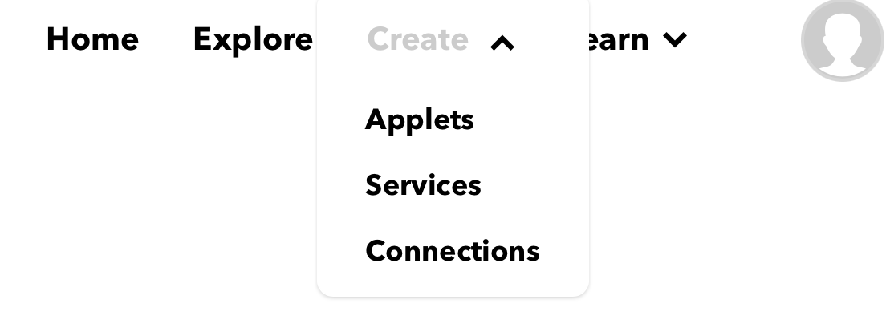
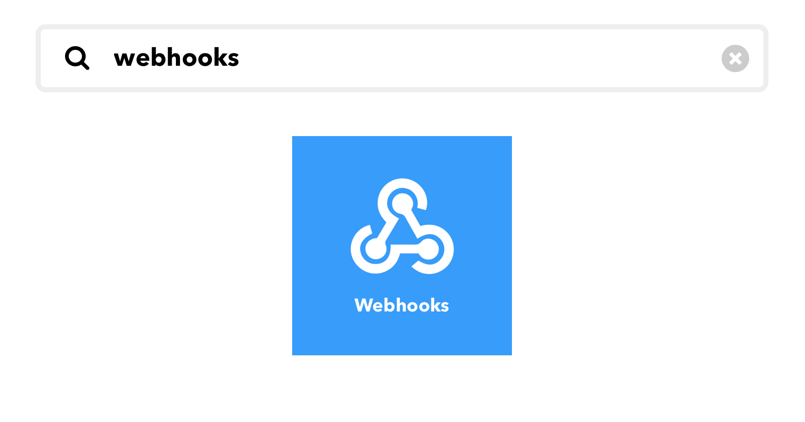
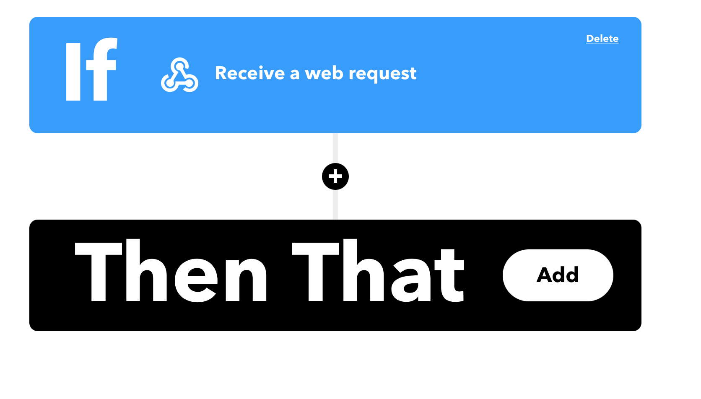
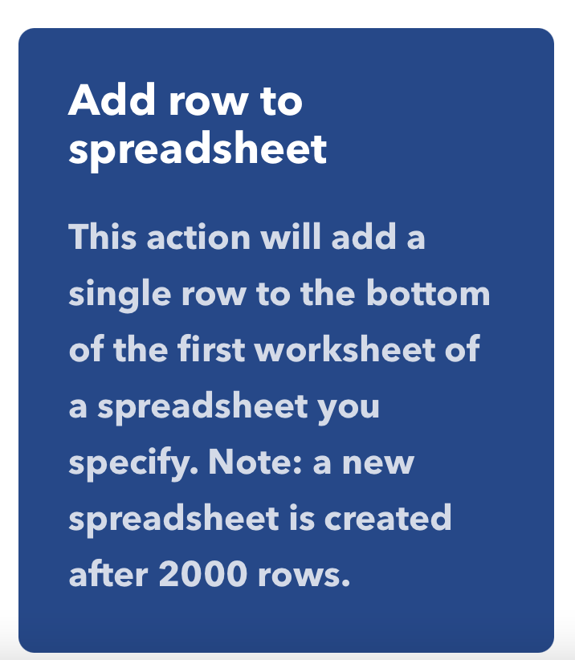
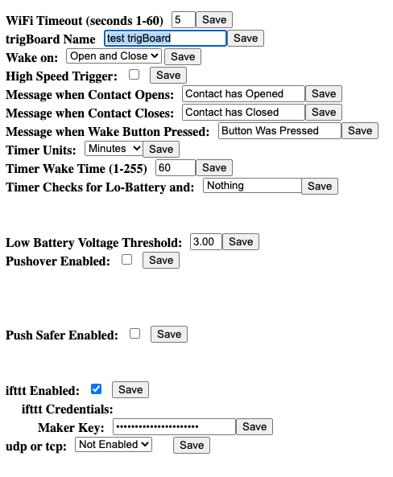

Log to Google Sheet - IFTTT¶
Log trigBoard events to an online Google Sheet! This is very simple with IFTTT, but you will need to obtain a free maker key - go to the Supported Services Page to set this up. Once you have the key, you can proceed with the following steps. Also note that you can use this as a “backup”, so receive a push notification as well as an email. Just enable any service you want and they’ll all fire off at once.
Create an Applet
Click Add

Search for Webhooks
Select this

This is important - the Event Name must Match the trigBoard Name you give in the Configurator

“THAT” click Add
Search Google Sheets and select add row - note that you will have to link this to your google account
The settings for the spreadsheet - give the sheet a name and note that Value3 is not used, so can delete that
All set then - continue
Give the applet a custom name and finish up
Launch the Configurator and set things up, WiFi, IFTTT enabled and put your Maker Key in, and set the trigBoard name to the Event Name
All set! Now you can test things out and you should see a spreadsheet

Warning
I have seen some issues here where the spreadsheet is not automatically created… in that case, try creating it manually per the path you have configured in the settings for this applet. If still having problems, you can disconnect the link with Google from IFTTT and try re-creating the applet.
And after testing a couple events, all looks good! Note that you can go back into the settings for this applet and modify how the logs are added. Also, multiple trigBoards can log to the same sheet, just add a prefix to the contact open/close message while using the same trigBoard name. So name might be trigBoard, then contact open message ” Garage Opened” and second trigBoard using same name could have its message ” Front Door Opened”